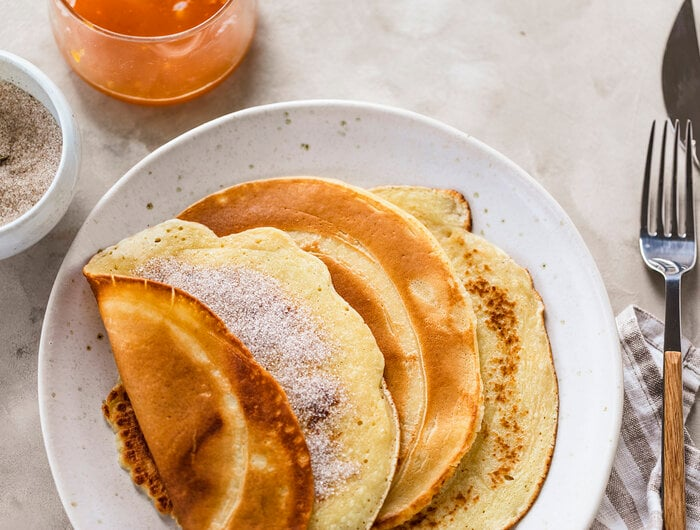

Omas Pfannkuchen

Die perfekte Nachspeise nach einem deftigen Essen
Zutaten für 4 Personen:
- 2 Eier
- 200ml Milch
- 1 Prise Salz/Zucker
- 0,5L Mineralwasser
- 200g Mehl
Kochanweisung:
- Eier mit Milch, Zucker, Wasser und Mehl zu einem glatten teig rühren
- Eine beschichtete Pfanne mit Öl erhitzen
- 1 Kelle Teig in die Pfanne geben
- 1-2 Minuten den Pfannkuchen von jeder Seite goldbraun backen
- Warm genießen
Zurück zur Startseite